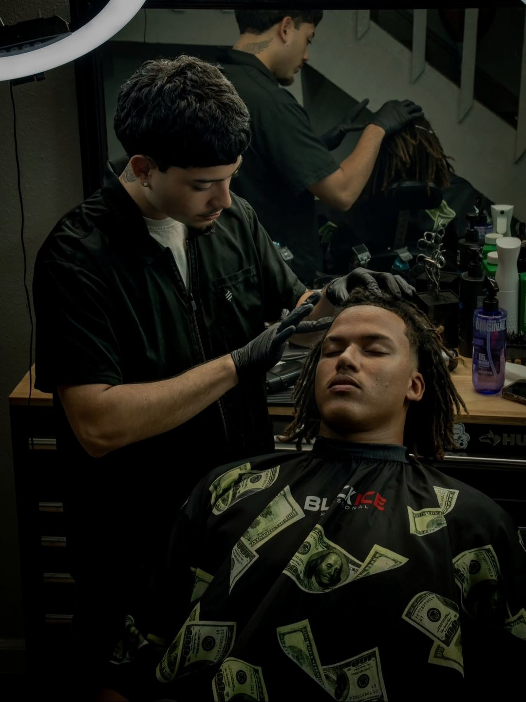
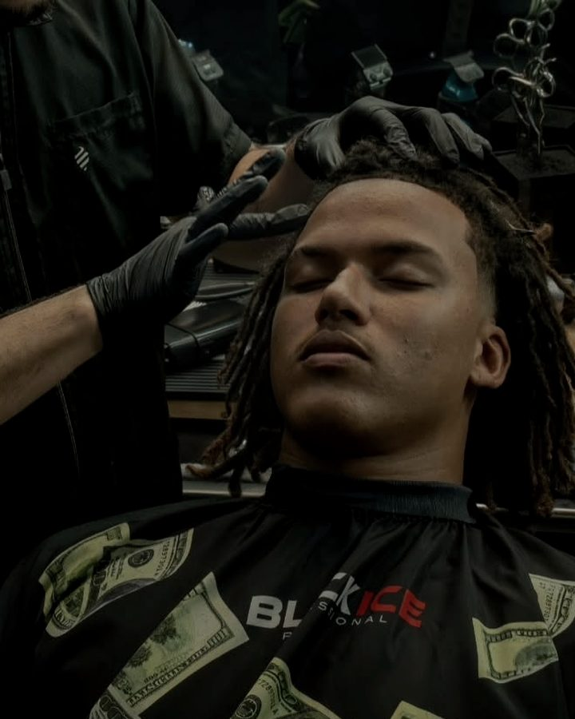
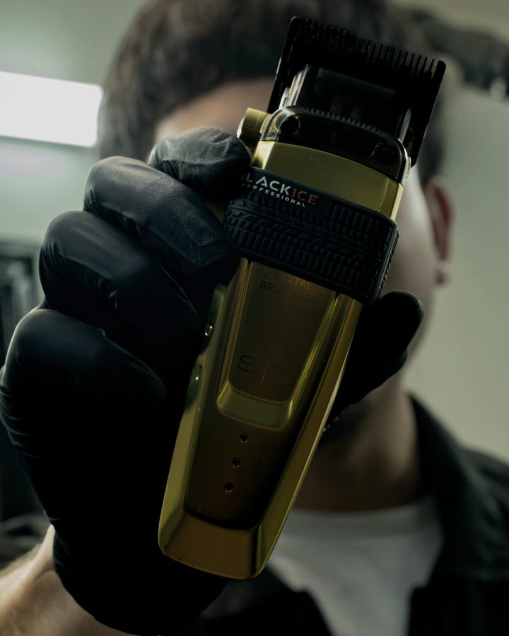
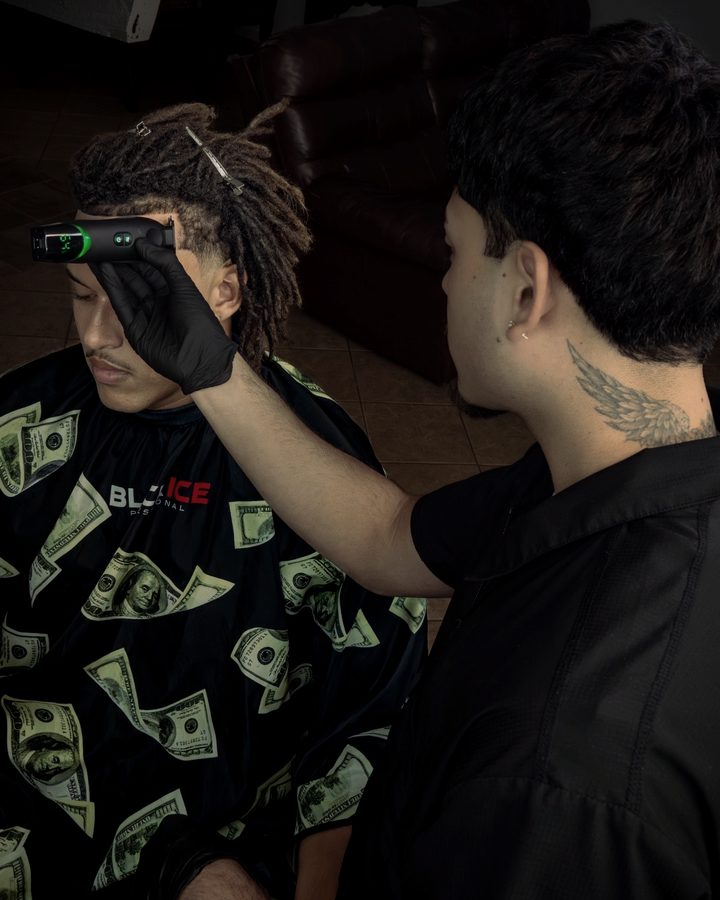
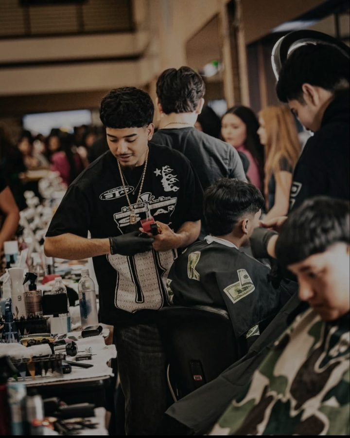

More than a job. It’s a passion.
Diego started cutting hair for friends, then their friends, and never stopped. Today he’s a licensed barber in Northwest Houston, booked through Booksy, and he still takes his time on every chair — because a good fade isn’t the job. Making someone walk out standing taller is.




The tools don’t make the fade.
- Clipper
- BaBylissPRO Black Ice FX
- Guards
- #0 · #1 · #2 · #3 · freehand above
- Chair time
- 45 min haircut · 60 min with design
- Specialty
- Burst fades · tapers · freehand line work
Fades, tapers, freehand.
“I get paid to make people look good.”

What people say.
I booked my appointment for 6:00pm and got a 10 guard, mid fade. Diego did a really good job and he takes his time.— German
Rate card.
Edges and the neckline, cleaned up sharp.
Book this on BooksyFade or taper, cut to how you wear it.
Book this on BooksyFreehand line work, drawn to the head.
Book this on BooksyThe cut, plus the beard shaped and lined.
Book this on BooksySame care, smaller chair.
Book this on BooksyDiego comes to you, Northwest Houston.
Book this on BooksySun closed See open times
“If it ain’t choppedbydiego then it ain’t right.”
Northwest Houston · appointments only
Se habla español